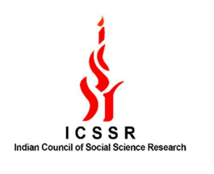

Research Assistant - ICSSR Project P-56 Major Grant - From April 2023 to March 2024

Project carried out at HNB Garhwal University (A Central University), Uttarakhand
Topic: “Strategic Technology Adoption and Acquisition: A Review Policy Intervention and Impact on Performance of SMEs in India”
Key roles and responsibilities
- Have written the literature review, research methodology, policy implications chapters
- Have written several journal articles related to the project
- Have engaged in proofreading, aligned the document, and prepared the final report
- Done grammar check for the complete document using Grammarly software